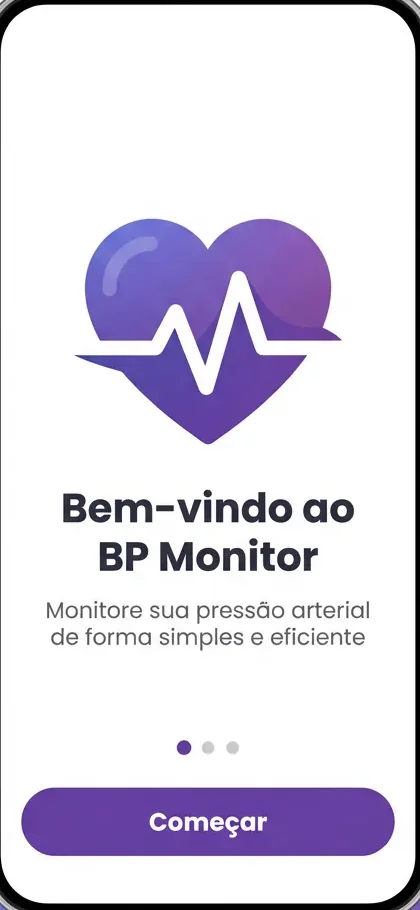
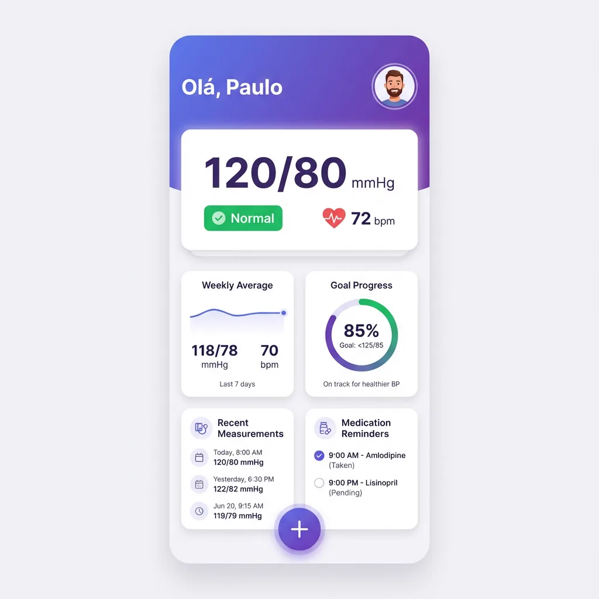
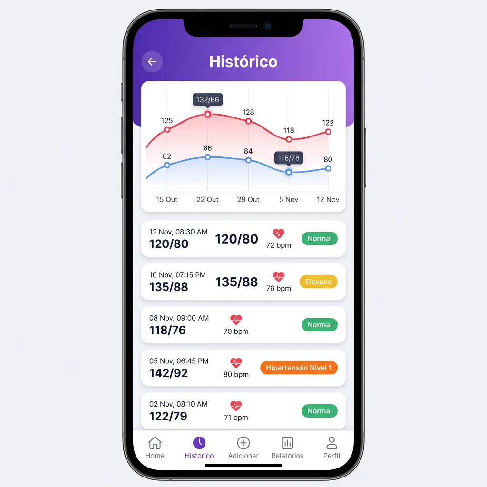
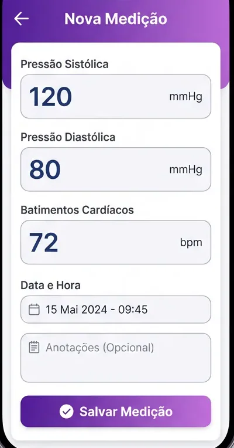

Tecnologia cardiovascular para sua rotina
Controle sua pressão arterial com inteligência
O BP Monitor ajuda você a monitorar, registrar e acompanhar sua saúde cardiovascular em tempo real.




Benefícios
Uma plataforma pensada para transformar dados em decisões seguras
Recursos projetados para criar confiança, recorrência e visibilidade total da sua saúde cardiovascular.
Monitoramento em tempo real
Visualize sua evolução imediatamente com leituras organizadas, claras e sempre acessíveis.
Histórico completo
Tenha todos os registros em uma linha do tempo inteligente para identificar padrões e tendências.
Alertas inteligentes
Receba notificações estratégicas quando as medições exigirem atenção ou acompanhamento.
Interface intuitiva
Navegação leve, moderna e pensada para facilitar o uso em qualquer momento do dia.
Relatórios detalhados
Gere insights visuais prontos para compartilhar com profissionais de saúde com rapidez.
Segurança dos dados
Camadas de proteção e privacidade para garantir confiança total no armazenamento das medições.
Como funciona
Três passos para cuidar melhor da sua rotina cardiovascular
Uma jornada simples, visual e fluida para transformar acompanhamento em hábito saudável.
Registre suas medições
Adicione valores com rapidez, personalize horários e crie uma base confiável para acompanhar sua saúde.
Acompanhe seus indicadores
Veja gráficos, padrões e comparativos em uma interface elegante que facilita interpretação instantânea.
Compartilhe relatórios com médicos
Envie resumos visuais completos para consultas mais assertivas, rápidas e orientadas por dados reais.
Visual do app
Design que inspira confiança
Cada pixel foi pensado para entregar uma experiência premium na palma da sua mão.
01
/
08
Bem-vindo
Primeira impressão que transmite confiança
Depoimentos
Percepções reais de quem transformou o cuidado diário em consistência
Uma experiência que gera segurança visual, facilidade de uso e mais confiança na rotina de saúde.
'/%3E%3Ctext x='50%25' y='54%25' dominant-baseline='middle' text-anchor='middle' fill='%23F5F7FA' font-family='Arial,sans-serif' font-size='40' font-weight='700'%3EMC%3C/text%3E%3C/svg%3E)
Mariana Costa
Usuária do app
“Finalmente encontrei um app que parece premium e realmente me ajuda a enxergar minha evolução com clareza.”
'/%3E%3Ctext x='50%25' y='54%25' dominant-baseline='middle' text-anchor='middle' fill='%23F5F7FA' font-family='Arial,sans-serif' font-size='40' font-weight='700'%3EFM%3C/text%3E%3C/svg%3E)
Felipe Moura
Paciente monitorado
“Os alertas e relatórios mudaram a forma como acompanho minha pressão. Ficou muito mais simples conversar com meu médico.”
'/%3E%3Ctext x='50%25' y='54%25' dominant-baseline='middle' text-anchor='middle' fill='%23070B14' font-family='Arial,sans-serif' font-size='40' font-weight='700'%3ERL%3C/text%3E%3C/svg%3E)
Renata Lima
Profissional de saúde
“A visualização é muito bem resolvida. Os relatórios chegam claros, organizados e prontos para apoiar a consulta.”
Pronto para começar?
Comece hoje mesmo a cuidar melhor da sua saúde.
Baixe o BP Monitor e transforme monitoramento em clareza, prevenção e controle inteligente.